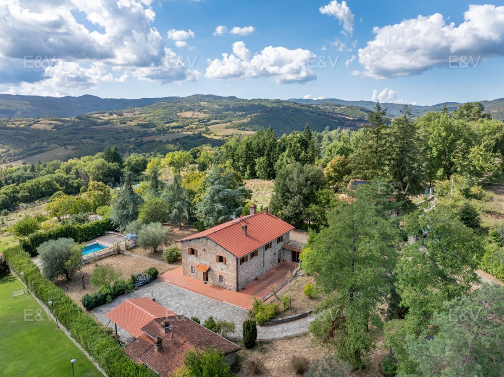

€700.000
Pratovecchio Stia countryside, near the castles of Romena, Porciano and Poppi, Tuscany
Open the listingBrand-new E&V Arezzo listing (published 5 Oct 2026): recently renovated stone farmhouse that keeps its Tuscan rural architecture (exposed stone, chestnut-beamed ceilings, terracotta, fireplace) with a detached guest annex and wood-oven loggia, plus a verified large built private pool and panoramic Casentino views. Habitable now, cozy character, well under cap.
Opened 5 Oct 2026 on Engel & Völkers Arezzo expose; asking €700.000; ref W-04BM0Z; uuid d0fb9454-6ab1-5c92-9d60-eec736fb6548; 5 beds / 5 baths; ~400 m²; plot ~4.000 m²; construction year 1900; condition.rehabilitationDone; hasSwimmingPool true; jacuzzi bath in master suite; garage; furnished. Interiors are traditional (beams/terracotta, classic bathrooms) rather than contemporary design. Pratovecchio/Stia 2 to 3 km; Arezzo ~43 km; Florence ~1h15.